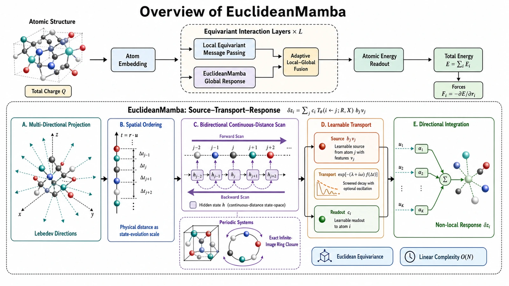

Long-Range Atomistic Modeling
Chem-Mamba · EuclideanMamba
A linear-complexity architecture representing charge transfer, electron delocalization, and periodic response as unified source–propagation–response state dynamics.